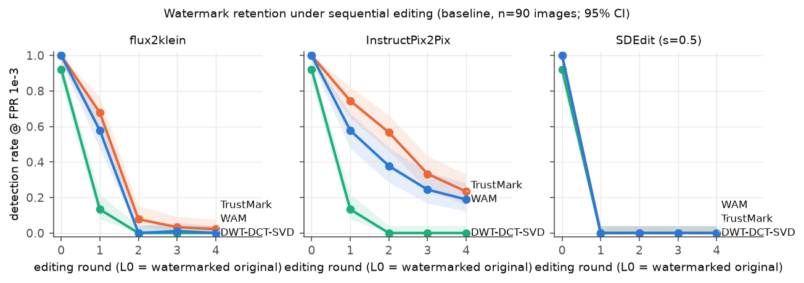
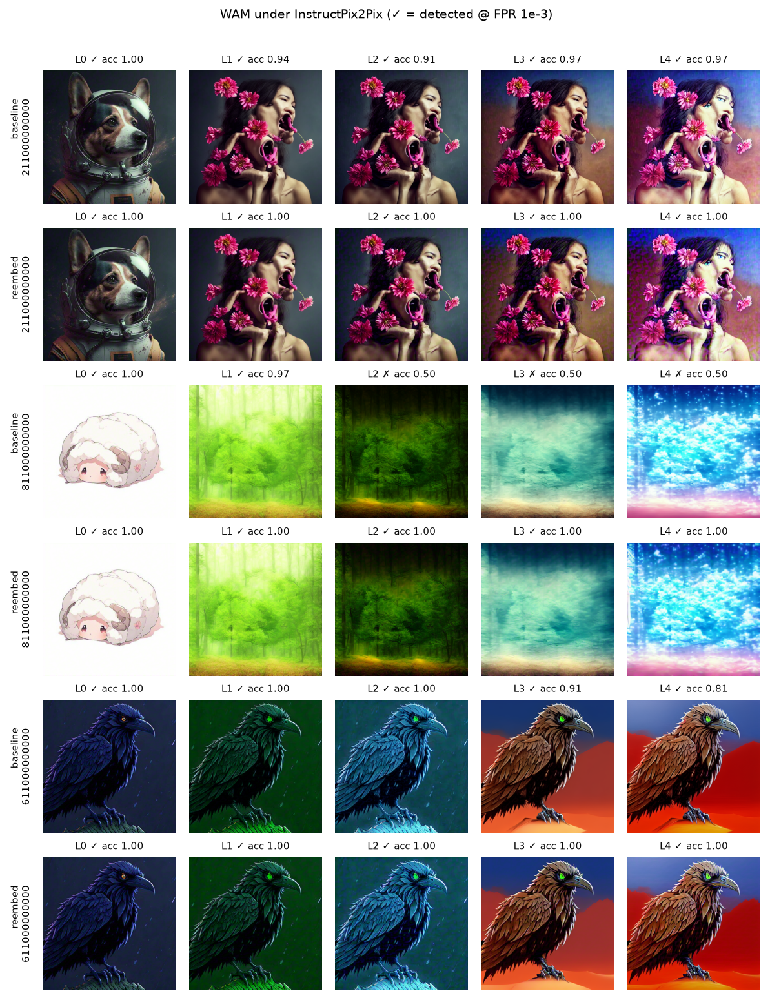
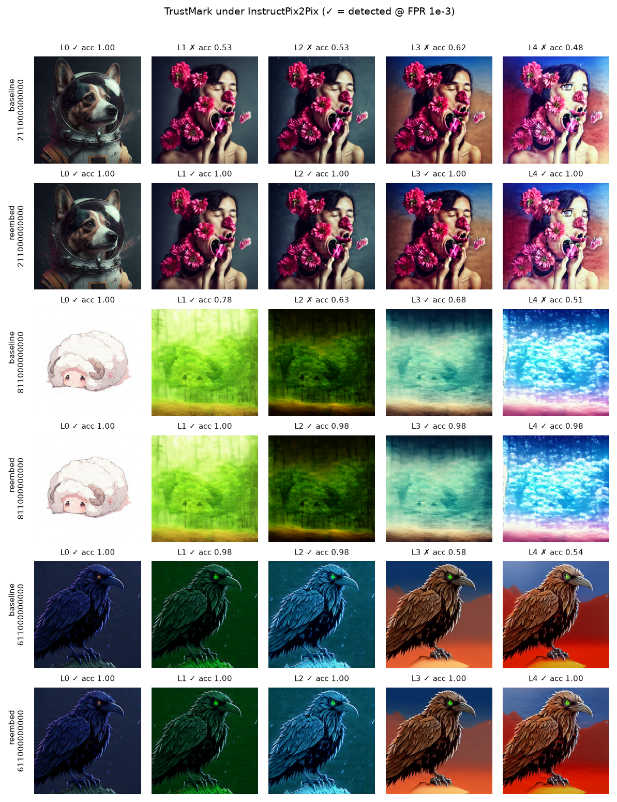

False-positive checks
Zero false positives per detector: 1,350 negative rows in stage 2, 90 in the guided test, and 450 per detector in the generated-image track.
Measured outcomes / sequential image editing
Across InstructPix2Pix, SDEdit, and FLUX.2-klein, ordinary text-guided editing sharply reduced detection of marks added after image generation. Re-embedding the decoded payload largely preserved detection.
A separate generation-time track shows a different pattern: Gaussian Shading remained detectable through InstructPix2Pix edits, while Tree-Ring did not.
These are saved outputs from the completed stage-2 experiment, not stock illustrations. In each qualitative panel, the upper rows are plain editing and the lower rows decode and re-embed the payload after each edit.



Image provenance: selected image IDs and edited outputs from the stage-2 PIE-Bench++ experiment assets. Prompts and per-round detector scores are stored with the experiment results. The examples are illustrative, not a substitute for aggregate statistics.
Detection after four consecutive edits (L4), measured against the watermarked original (L0). The same 90 source images were evaluated with each editor and watermark.
After four InstructPix2Pix edits, WAM remained detectable on 19% of images and TrustMark on 23%. SDEdit at strength 0.5 reduced all three post-hoc detectors to 0% at L4. FLUX.2-klein left 0% WAM and DWT-DCT-SVD detections and 2% TrustMark detections.
| Watermark | Plain edit | Decode, edit, re-embed | ||||
|---|---|---|---|---|---|---|
| InstructPix2Pix | SDEdit | FLUX.2-klein | InstructPix2Pix | SDEdit | FLUX.2-klein | |
| WAM | 18.9%12.1-28.2 | 0%0-4.1 | 0%0-4.1 | 100%95.9-100 | 100%95.9-100 | 100%95.9-100 |
| TrustMark | 23.3%15.8-33.1 | 0%0-4.1 | 2.2%0.6-7.7 | 100%95.9-100 | 100%95.9-100 | 100%95.9-100 |
| DWT-DCT-SVD | 0%0-4.1 | 0%0-4.1 | 0%0-4.1 | 87.8%79.4-93.0 | 91.1%83.4-95.4 | 86.7%78.1-92.2 |
At L0, WAM and TrustMark were detected on 100% of images; DWT-DCT-SVD on 92.2%. Re-embedding retains nearly all starting DWT-DCT-SVD detections rather than creating a perfect starting detector.
On 18 held-out images, guided InstructPix2Pix variants improved L4 detection over plain editing. Re-embedding remained the strongest comparator.
| Method | WAM | TrustMark |
|---|---|---|
| Plain editing | 16.7%5.8-39.2 | 22.2%9.0-45.2 |
| Guided, weight 0.05 | 72.2%49.1-87.5 | 72.2%49.1-87.5 |
| Guided, weight 0.2 | 77.8%54.8-91.0 | 88.9%67.2-96.9 |
| Decode, edit, re-embed | 100%82.4-100 | 100%82.4-100 |
The n=18 estimates are imprecise; treat this as validation evidence, not a precise population estimate.
On 45 images generated from source captions, watermark survival depended on the generation-time method and editor.
| Editor | Gaussian Shading | Tree-Ring |
|---|---|---|
| InstructPix2Pix | 95.6%85.2-98.8 | 22.2%12.5-36.3 |
| SDEdit | 4.4%1.2-14.8 | 0%0-7.9 |
This is separate from post-hoc watermarking: the marks are encoded in the diffusion process. The mechanisms are not directly interchangeable.
No false positives were observed on the unwatermarked tracks at the study's target operating point.
Zero false positives per detector: 1,350 negative rows in stage 2, 90 in the guided test, and 450 per detector in the generated-image track.
Diffusion-based regeneration is destructive to many post-hoc marks. Decoding and re-embedding after an edit preserved detection more consistently than plain or guided editing.
The benchmark separates post-hoc marks in existing images from marks encoded during image generation.
x[0] = Embed(x, m)
x[r] = E(x[r-1], p[r], s[r])
r = 1,...,4Image IDs, prompts, and editor seeds are paired across watermark methods.
m_hat[r] = Decode(x[r-1])
x[r] = Embed(E(x[r-1], p[r], s[r]), m_hat[r])The ground-truth payload is not passed to the editor; decoder errors can propagate.
X ~ Binomial(k, 1/2)
detect = 1[P(X >= b) <= 10^-3]b is the number of matching bits. k=32 for WAM/DWT-DCT-SVD and k=100 for TrustMark.
edit_success = 1[clip_dir > 0 AND clip_t_gain > 0]
R[r] = (1/N) SUM_i detect(i,r)R[r] is the detected fraction at level r. Edit quality and watermark survival are reported separately.
x_hat0 = z_t - sigma_t * epsilon_hat
L_wm = BCE(D(VAE_dec(x_hat0)), m_hat)
z_t <- z_t - lambda * g / RMS(g)g = dL_wm/dx_hat0. The estimated noise is held fixed during the guidance update.
e(L) = (acc(L) - 0.5) / (acc(0) - 0.5)
linear: e(L) = 1 - bL
exponential: e(L) = exp(-qL)One-parameter fits summarize excess bit-accuracy decay across edit levels.
Guidance was tested only for WAM and TrustMark, which expose differentiable decoders. The forgery probe checks whether the same process can introduce a detectable payload on clean input.
These results characterize the tested watermark implementations, editors, settings, and image sets.